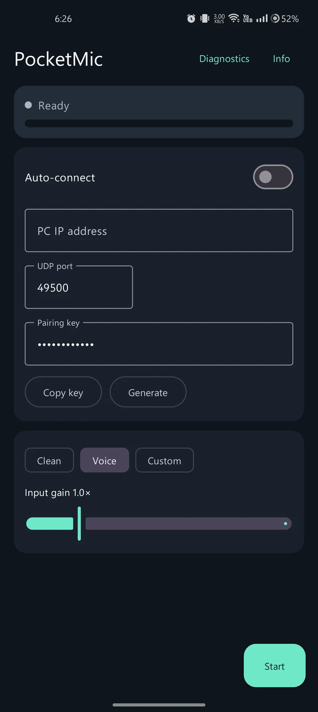

Your phone.
Your next
PC mic.
Turn your Android phone into a wireless microphone for Windows. For your next voice chat, stream, or call — over your own local network.
Free & open source. Two apps to install. VB-CABLE is needed for app microphone routing.
One audio path.Phone to Windows.
{kind=link}


Route into the Windows apps
you already use, via VB-CABLE.
Find your setup
Same phone.
Different kind of mic.
Pick what you want to do. We’ll show you the audio route, the right starting point, and the limits worth knowing.
Discord & gaming
Your squad.
Your voice.
Keep your favourite headphones. Use your Android phone for voice chat on your PC.
Set up for DiscordOBS & creators
A new input.
Not a new rig.
Add your phone’s mic to an OBS scene for a stream, tutorial, or desk-side recording.
Set up for OBSMeetings & calls
One more way
to join the call.
Try your phone as an alternative microphone for Teams, Zoom, or another Windows calling app.
Plan your call setupMore interested in how it’s built?
Explore the protocol & sourceFrom pocket to PC
Install. Pair.
Pick your input.
Your Android app captures the audio.
Your Windows receiver gives it a destination.
- 01 / GET BOTH APPS
A phone app. A PC app.
Install the Android APK and extract the Windows receiver ZIP. Connect both devices to the same trusted private network.
- 02 / MAKE THE CONNECTION
Pair your devices.
Open the receiver, then pair from Android with the QR code or connection details. Start the phone’s microphone.
- 03 / CHOOSE THE DESTINATION
Let your app hear you.
Route the receiver to
CABLE Input. In Discord, OBS, or your calling app, chooseCABLE Outputas the mic.
Need the exact steps, not just the overview?
Open the complete setup checklistOne extra step. No surprises.
Meet the cable
that isn’t a cable.
VB-CABLE connects PocketMic’s Windows output to the microphone input your apps expect.
It’s a separate audio driver from VB-Audio. Install it once for this route. PocketMic does not currently bundle its own virtual microphone driver.
Show me the audio routeYes, the names feel backwards. Input goes into the cable. Output comes out of it, into your app.
Useful by design
Less in the way
of your voice.
No PocketMic account. No cloud relay between your phone and PC. Just a local audio path you can inspect.
The local connection ends at your PC. Your calling or streaming app handles what happens next.
Pair without the typing.
QR pairing brings the connection details across. Manual connection details remain available as a fallback.
Start with Voice. Explore from there.
Voice mode uses Android’s voice-communication source. Clean requests less-processed input, subject to your phone’s capabilities.
See what your setup is doing.
Input level, gain controls, and receiver diagnostics help you test the route rather than guess whether it works.
Open source, right down to the protocol.
Read the implementation, build the apps yourself, or help improve the project.
Before you download
Good questions.
Straight answers.
This is early software, not a promise of studio sound or zero latency.
Visit troubleshootingWhat do I need?
An Android 8+ phone, a Windows 11 x64 PC, both PocketMic apps, and a trusted private network shared by both devices. Add VB-CABLE to route into another app’s microphone input.
Is it free?
PocketMic is free and open source under the MIT License. VB-CABLE is a separate third-party download with its own donationware licensing.
Is the Android app on Google Play?
The download offered here is the installable, debug-signed APK from the v0.1.4 GitHub release. It is not a production-signed store release.
Does it work without internet?
The phone-to-PC audio connection does not need a cloud relay or internet access once installed. Downloading the apps requires internet, and Discord, Teams, or your streaming service may still use it.
Will there be a delay?
Yes. Capture, networking, buffering, and Windows audio routing add delay. A 10 ms packet is not a 10 ms end-to-end latency claim. Test your setup; this is not intended for real-time instrument monitoring.
Will it work on my exact devices?
The supplied app captures are from Android and Windows, but physical-device acceptance remains an ongoing task in the release notes. Test your phone, network, and destination app before relying on it.
Your next mic
might be in your pocket.
Android + Windows. Free, open source, and ready to try.